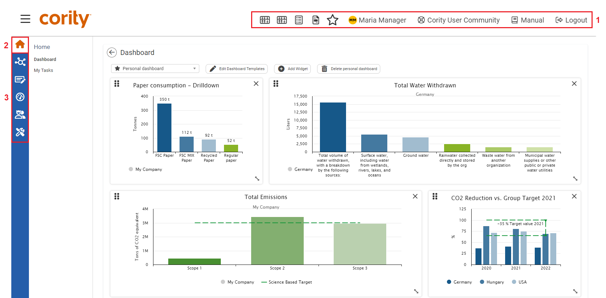

The menu is the starting point for working with WeSustain. The image below shows the menu structure from the point of view of a user who can view all areas and who also has access to the administration area. In this example the Dashboard is set as the starting page. Depending on your authorization, not all areas may be visible and your menu will differ from the image below.

The menu overview consists of three parts:
| 1 | The uppermost bar is formed by the account and support bar. Here you can see which user profile is currently logged in. This is also where you can access your personal account management and log out of the portal. The latest version of the manual can be downloaded via Manual. Click Support to send support requests or contact your internal support. |
| 2 | From anywhere in the system, you can open and close the menu by clicking the Menu Symbol . This will lead you to the menu overview. All available modules of the present area are shown below the menu button. |
| 3 | In the menu overview, you have access to all individual areas and their respective modules. |